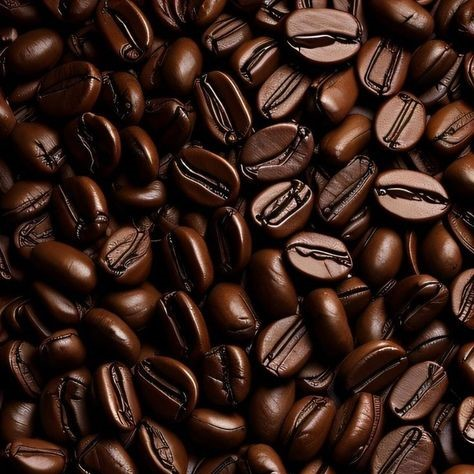

Ethiopia boasts a rich gastronomic heritage, with dishes that have gained admiration both domestically and internationally. Notably, Ethiopia is the birthplace of teff and coffee (locally known as buna), and is often referred to as the origin of life. Among its diverse fare, three dishes stand out: Shekla Tibs, Doro Wot, and Kitfo.
